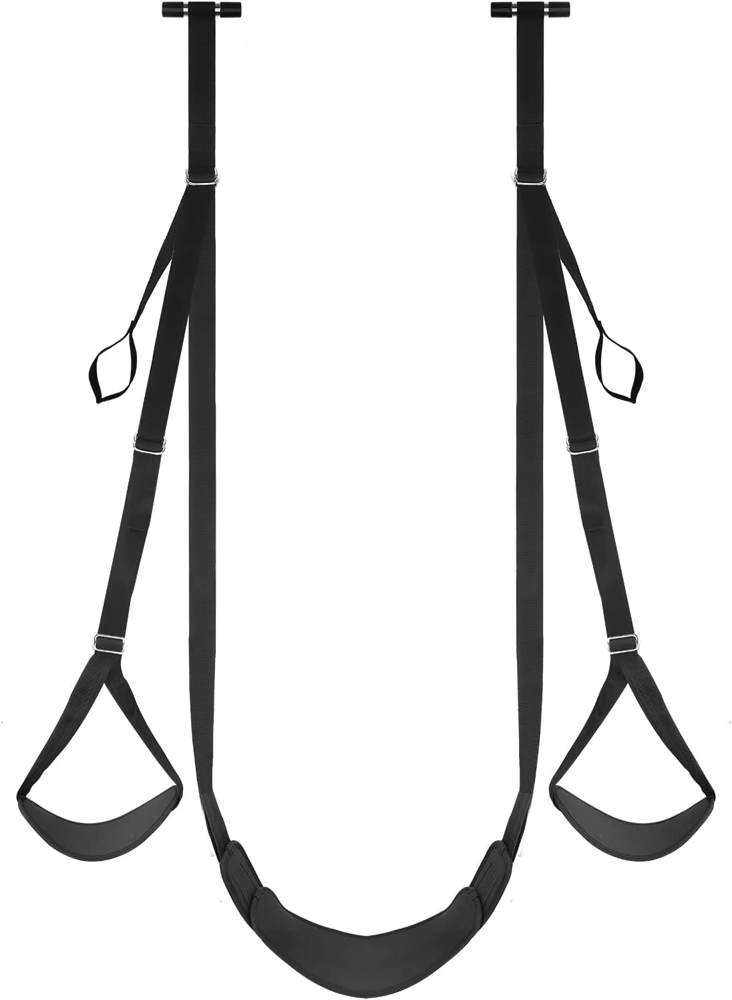
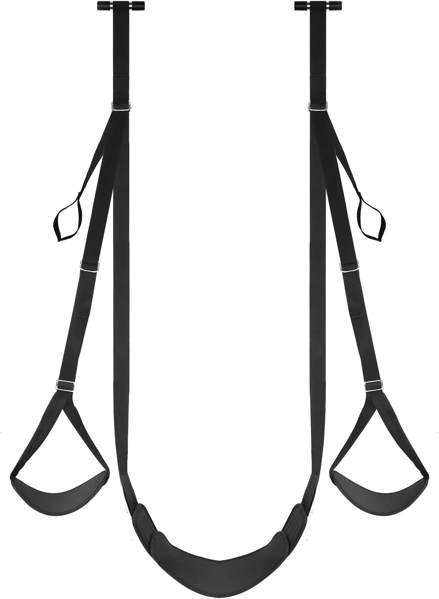
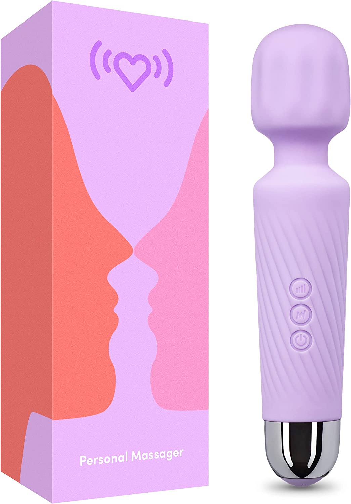

Are you looking for ways to take your bedroom game to the next level and make your man obsessed with you? Look no further! Our blog is dedicated to providing tips and tricks for pleasing your man in bed and keeping the spark alive in your relationship. From exploring new positions and techniques to incorporating toys and role play, we've got all the advice you need to make your man crave you like never before. But it's not just about physical pleasure - we also delve into the emotional and psychological aspects of a satisfying sexual relationship, including the importance of communication and building intimacy. Whether you're a seasoned pro or just starting out in the bedroom, our blog has something for everyone. Follow us for all the tips and tricks you need to keep your man coming back for more.
1. Get Frisky Anywhere But In Bed
"Men fantasize about having sex in different places," says Dr. Scott Haltzman, author of The Secrets of Happily Married Men. While routine sex has its place, he sometimes wants to do something different—and that's good for you too. One day, head to Ikea in search of a faux bear-skin rug (spare him the trip) and get wild in front of your fireplace. Or simply straddle him on the couch while the kids are at a sleepover — just make sure the TV is turned off behind you.
2. Spring A Surprise
Men often find it flattering and ego-boosting to know that their partner desires them. Surprising him with a spontaneous and seductive gesture can be a winning move that he won't easily forget. Initiating sexual activity can be a great way to show your interest and desire for him. If you want creative ideas, try this sex game for couples
3. Don't Forget His Fingers:
The webbed area at the base of his fingers is often overlooked, but it's very sensitive and can be a great source of pleasure. Try sliding your way up the side of his fingers with your tongue, or take the tip of his finger between your lips for a tantalizing sensation.
4. Kiss His Thighs:
The thighs are a sensitive area that can respond well to kisses and nibbles. Try kissing and licking your way up and down his thighs to drive him wild. The legs are often neglected, but they can be a great source of pleasure. Try kissing and licking your way up and down his legs, paying extra attention to his inner thighs and knees.
5. Indulge His Fantasy:
Whether he's been dying to see you in a certain type of lingerie or have you dominate him, you'll only know if you ask. It can be helpful to simply ask your partner about their sexual desires and preferences. Every person is unique, and this includes their fantasies. By asking your partner about their ultimate sexy wish and then fulfilling it, you can help create a more satisfying and fulfilling sexual experience for both of you. Whether your partner has always wanted to see you in a particular type of lingerie or desires to be dominated by you, the only way to know is by asking. If you have an honest and healthy relationship, your partner should be open to sharing their desires with you.
6. Dress Up:
Never ever underestimate the power of a see-through teddy to get your guy standing tall. Whether you are a married woman or you have started dating recently, it is crucial that you get the basics right. This means you should invest in sexy lingerie, because you might never know when you require these. A hot piece of lingerie can reignite the flames of love and romance in your relationship and help establish a lasting connection with one another. So plan nights out with your husband or potential partner and surprise him with appealing lingerie to let him know that the effort has been made for him.
Here is the amazon link of the best laungerie
https://amzn.to/3WImm9R
7. Have Sex Outside Of Bed:
The easiest way to give him the hardest boner of his life and have the hottest, most memorable sex of your lives is to have sex in unconventional places. Your car, your garage, the living room couch, on the rug, against the window. You can even try public places like trial rooms, handjobs in movie halls.8. Get Kinky:
If you’re in a rut, a surefire way to distract yourselves from the issue at hand is to try something out of your comfort zone. Sex is often a way to release tension and stress. For many guys, the more stress they have, the more they may want to do sexual acts that are out of the ordinary. We have given a Complete bdsm guide. Also, check out How to have tantric sex
BDSM Master-Table Sex-swing
Sex-swing
9.Use Toys
Incorporate toys and other props into your sexual play. This can add variety and spice to your sex life. Read our article on the best sex toys to spice up your sex life But don't worry if you're short on time, I've included some of them below, their amazon links open by clicking photos :).



10.Make Him Laugh
"Humor can help alleviate stress and pressure in various situations, including sexual encounters. In fact, incorporating a sense of humor into these experiences can improve intimacy and allow for a more spontaneous and relaxed atmosphere. As Bryan T. puts it, 'I've found that in situations where everything in the bedroom is so serious, getting rid of our clothes seems to also mean getting rid of our sense of humor. But when we can laugh and have fun together, it can take some of the pressure off and make it easier to let go and enjoy ourselves.'"
11.He Wants You To Initiate Sex
A couples therapist, frequently hears men in heterosexual relationships express frustration about feeling like they have to initiate sex with their female partners. However, initiating sex can actually be a way to show your partner that you desire and find them attractive, which can boost their confidence. If you want to initiate sex with your partner, it may be helpful to ask them how they would prefer to be approached or initiated. You can also try communicating your intentions through nonverbal cues, such as sensually touching or massaging them, but be sure to let them know that you are trying to initiate sexual activity.
12.He Wants To Get Rough and Primal
My man was excited when a woman he was seeing expressed a desire to be more playful and spontaneous in their sexual encounters. He recalls an experience with an ex-girlfriend where she lay on the bed and begged him to remove her clothes forcefully, which he did. The sexual activity that followed was enjoyable, but the man particularly enjoyed the sense of passion and intensity that came with letting him be dominant and engage in power dynamics. If you want to please your partner in this way, consider being submissive and allowing them to take the lead. This can help boost their feelings of masculinity.